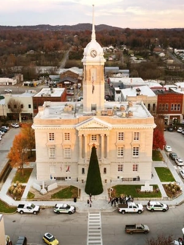

Visit Maury County

The town square holds a wide variety of unique places to visit and
make memories, including some of the finest locally owned restaurants and
souvenir stores.

Maury county is full of history and prides iteself in the preservation therof,
and as such, offers many opportunities to explore the nature surrounding it.
Experience some of the many beautiful scenic hiking trails the maury county
area has to offer.

Mule day is a holiday observed by the locals of Maury County on March 27th.
Mule day is an annual celebration of all things related to mules, here at the
self-proclaimed "mule capital" of the world. Every year a mule day parade is held
along with many other activities.

Maury county has many exciting events, such as the Maury County fair, a
local favorite. Come join the fair for endless family fun during select times
every year.

Maury County has a population of over 100,000 individuals and
continues to grow.
🔎 Number of Visits to this page: